Chap 9 Graph Algorithm¶
Definitions¶
- G(V, E)：G表示图(graph)，V = V(G) 表示关于顶点(vertices) 的有限非空集合，E = E(G) 表示关于边(edges/arcs) 的有限集合
- 无向图(undirected graph)：\((v_i, v_j) = (v_j, v_i)\)表示相同的边
- 有向图(directed graph, digraph)：\(<v_i, v_j> \ne <v_j, v_i>\) >\(<v_i, v_j>\)：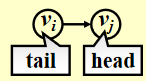
限制： + 自环(self loop) 是非法的：
+ 不考虑多重图(multigraph) （两个节点间有多条边）的情况

- 完全图(complete graph)：有最大数量的边的图（每对顶点都有直接相连的边）
- 无向图：\(V = n \quad E = C^2_n = \frac{n(n - 1)}{2}\)

- 有向图：\(V = n \quad E = P^2_n = n(n - 1)\) 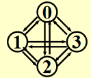
- 无向图：\(V = n \quad E = C^2_n = \frac{n(n - 1)}{2}\)
- 邻接(adjacent)
- 无向图：如果\((v_i, v_j)\)存在，则称\(v_i, v_j\)是邻接的

- 有向图：如果\(<v_i, v_j>\)存在，则称\(v_i\)到\(v_j\)是邻接的，或者说\(v_j\)来自\(v_i\)是邻接的 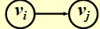
- 无向图：如果\((v_i, v_j)\)存在，则称\(v_i, v_j\)是邻接的
- 子图(subgraph)\(G' \subset G\)，\(V(G') \subseteq V(G) \wedge E(G') \subseteq E(G)\)
- 从\(v_p\)到\(v_q\)的路径(path)(\(\subset G\))：\(\{v_p, v_{i1}, v_{i2}, \dots, v_{in}, v_q\}\)，使得\((v_p, v_{i1}), (v_{i1}, v_{i2}), \dots, (v_{in}, v_q)\)或者\(<v_p, v_{i1}>, <v_{i1}, v_{i2}>, \dots, <v_{in}, v_q> \subset E(G)\)
- 路径的长度(length)：路径上边的条数
- 简单路径(simple path)：对于上述路径，\(v_{i1}, v_{i2}, \dots, v_{in}\)是不同的(不会多次经过同一顶点)
- 环(cycle)：对于一条简单路径，起点与终点相同，即\(v_p = v_q\)
-
连通(connected)
-
无向图：
- 对于两个顶点\(v_i, v_j\)而言，如果它们之间存在一条路径，则称它们是连通的
- 对于整张无向图\(G\)而言，如果图内两个不同的节点之间相互连通，则称整张图是连通的
对于\(n\)个顶点的无向图，最少需要\(n - 1\)条边来实现整张图的连通
- 无向图\(G\)的(连通)分量(component)：极大连通子图(一张图中仅有1个)
- 树(tree) 是连通且 无环(acyclic) 的图
-
有向图：
- 有向无环图(directed acyclic graph, DAG)
- 强连通(strongly connected) 有向图\(G\)：对于\(V(G)\)中的每对顶点\(v_i, v_j\)，存在从\(v_i\)到\(v_j\)==和==从\(v_j\)到\(v_i\)的有向路径
- 弱连通(weakly connected) 有向图：在不考虑方向的情况下(即无向图)，整张图是连通的(即对于\(V(G)\)中的每对顶点\(v_i, v_j\)，存在从\(v_i\)到\(v_j\)==或==从\(v_j\)到\(v_i\)的有向路径)
对于\(n\)个顶点的弱连通有向图，最少需要\(n - 1\)条边来实现整张图的连通
- 强连通分量(strongly connected component) ：极大强连通子图
- 弱连通分量(weakly connected component) ：极大弱连通子图
注：对于一个仅有一个顶点的图，它自身就是连通分量 + 度(degree)：Degree(v)，与顶点v相连的边数 对于一个有向图\(G\)而言，度分为入度(in-degree) 和出度(out-degree)，例如：
 假如\(G\)有\(v\)个顶点和\(e\)条边，那么\(e = \dfrac{\sum\limits_{i = 0}^{n - 1}d_i}{2}\)，其中\(d_i = \text{degree}(v_i)\)
注：对于有向图而言，所有顶点入度之和 = 所有顶点出度之和
假如\(G\)有\(v\)个顶点和\(e\)条边，那么\(e = \dfrac{\sum\limits_{i = 0}^{n - 1}d_i}{2}\)，其中\(d_i = \text{degree}(v_i)\)
注：对于有向图而言，所有顶点入度之和 = 所有顶点出度之和 -
Representation of Graph¶
注：有成千上万中表示图的方法，这里只列出最常用的几种。可以根据具体情况设计出相应的表示法
法一：邻接矩阵(adjacency matrix)
对于一张具有\(n(n \ge 1)\)个节点的图\(G(V, E)\)，定义邻接矩阵\(adj\_mat [i] [j]\)为
$$
adj_mat[i][j] = \begin{cases}1 & \text{if } (v_i, v_j) \text{ or }
不难看出，如果\(G\)是无向的，则该邻接矩阵是对称的，因此浪费了一半的空间和时间（复杂度：\(\Theta(|V|^2)\)）
但是用在稠密(dense) 图(\(|E| = \Theta(|V|^2)\))中是比较合适的
我们可以通过下面这种方法来节省一半的空间(将下三角矩阵存入一维数组中)👇 \(adj\_mat[n(n+1)/2] = \{a_{11}, a_{21}, \dots, a_{n1}, \dots, a_{nn}\}\)，其中\(a_{ij}\)的索引为\(\frac{i(i-1)}{2} + j\)
法二：邻接表(adjacency lists)
来看个🌰：
如何存储这张图？ + 邻接矩阵：\(adj\_mat = \begin{bmatrix}0 & 1 & 0 \\ 1 & 0 & 1 \\ 0 & 0 & 0\end{bmatrix}\)
+ 邻接表：
+ 邻接矩阵：\(adj\_mat = \begin{bmatrix}0 & 1 & 0 \\ 1 & 0 & 1 \\ 0 & 0 & 0\end{bmatrix}\)
+ 邻接表：
注：节点的顺序并不重要
\(\therefore\) 对于无向图\(G\)，空间\(S = n\)个头 + \(2e\)个节点 = \((n + 2e)\)个指针 + \(2e\)个整型
时间复杂度\(T = E(G) = O(|V| + |E|)\)，适合用于稀疏(sparse) 图(\(|E| < \Theta(|V|^2)\))
注：事实上，邻接表可以胜任各种图的存储
对于无向图，Degree(i) = graph[i] 中节点的个数
而如果\(G\)是有向的，我们需要找到in-degree(i)
+ 法1：逆转邻接链表的做法
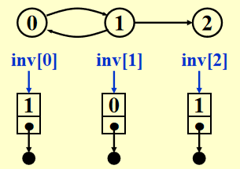
+ 法2：用多链表(multilist) 表示邻接矩阵\(adj\_mat[i][j]\)

尽管多链表的表示看起来挺优雅，但实现起来相当复杂（回忆[[Chap 3 Lists, Stacks, and Queues#^222af4|之前的例子]]），因此更推荐法1
补充：有时顶点的值不一定是整数，也有可能是字符串，这时需要维护一张从字符串映射到整数索引的表格，在图中用索引代替字符串
法三：邻接多重表(adjacency multilist)
注：这个不作要求，认识即可
在之前的邻接表里，对于每条边\((v_i, v_j)\)，我们会有两个节点：

通过改进，将这两个节点结合到一起，
于是就有如下表示方法：

mark表示某一条边
🌰

观察发现，在没有考虑mark存储的情况下，这种表示法的占用空间与邻接表完全一样。虽然它的空间复杂度略微高了点，但是在某些情况下(比如检验某条边后还要检验下一条边)比较有利
有时，我们会遇到加权边(weighted edges) 的情况，处理方式如下： + 邻接矩阵：\(adj\_mat[i][j] = \text{weight}\) + 邻接表/邻接多重表：为每个节点添加权重的字段
Topological Sort¶
AOV网(activity on vertex network)：对于有向图\(G\)，\(V(G)\)表示活动，\(E(G)\)表示位次关系
比如这张图表示C1是C3的前置活动：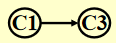
如果从\(i\)到\(j\)有一条路径，则称\(i\)是\(j\)的前任(predecessor)。如果\(<i, j> \in E(G)\)，则称\(i\)是\(j\)的直接前任(immediate predecessor)。称\(j\)是\(i\)的 (直接)后任((immediate) predecessor)
偏序(partial order)：具有传递性(\(i \rightarrow j, j \rightarrow k \Rightarrow i \rightarrow k\)) 和 非自反性(不存在\(i \rightarrow i\)) 的位次关系
如果具有自反性，就会出现要做一件事\(i\)之前要完成\(i\)的怪圈，因此❌
注：偏序的概念可见dm[[Chap 9 Relations#9.6 Partial Orderings|9.6节]]
可行的AOV网必须是一个有向无环图(DAG)
注：与AOV网相对的还有AOE网(activity on edge network)，具体内容可戳这
拓扑序(topological order) 是一张图的顶点的线性顺序，满足：对于任意两个顶点\(i, j\)，如果\(i\)是\(j\)的前任，则在线性顺序中\(i\)要出现在\(j\)之前
注： + 对于一个网，拓扑序不一定是唯一的 + 强连通的DAG一定有唯一的拓扑序 + 如果拓扑序中一个顶点出现在另一个顶点的前面，它们之间不一定存在路径
算法实现：
// version 1
void Topsort(Graph G)
{
int Counter;
Vertex V, W;
for (Counter = 0; Counter < NumVertex; Counter++)
{
V = FindNewVertexOfDegreeZero(); // O(|V|)
if (V == NotAVertex)
{
Error("Graph has a cycle");
break;
}
TopNum[V] = Counter; // or output V
for (each W adjacent from V)
indegreep[W]--;
}
}
注： +
FindNewVertexOfDegreeZero()：扫描Indegree[]数组，找到入度为0且未赋予拓扑序的顶点，如果没有找到顶点，那么表明图中出现了环。 + 时间复杂度：\(T = O(|V|^2)\) 👎
改进方法：将所有==未赋予拓扑序的、度为0的顶点==放入特殊的盒子(比如队列或堆栈)里
// version 2, using queue ADT
void Topsort(Graph G)
{
Queue Q;
int Counter = 0;
Vertex V, W;
Q = CreateQueue(NumVertex);
for (each vertex V)
if (indegree[V] == 0)
Enqueue(V, Q);
while (!isEmpty(Q))
{
V = Dequeue(Q);
TopNum[V] = ++Counter; // assign next
for (each W adjacent from V)
if (--indegree[W] == 0)
Enqueue(W, Q);
} // end-while
if (Counter != NumVertex)
Error("Graph has a cycle")
DisposeQueue(Q); // free memery
}
时间复杂度：\(O(|E| + |V|)\)
🌰


注：现实生活中，排课表的时候将队列作为special box，而不是堆栈，因为采用后者的方式，学生会深入学完一整个体系，然后才开始学下一个体系，这样学时间不够用。
Shortest Path Algorithms¶
给定一张有向图\(G(V, E)\)，以及成本函数\(c(e)\)，\(e \in E(G)\)，从源(source) 到目的地(destination) 的路径\(P\)的长度(length) 为\(\sum\limits_{e_i \subset P}c(e_i)\)（也称为权重路径长度(weighted path length)）
Single-Source Shortest-Path Problem¶
问题：给定一张权重图\(G(V, E)\)，以及一个可区分的顶点\(s\)，寻找从\(s\)到\(G\)中所有其他顶点的最短权重路径

注： + 右图存在负的边，这样最短路的长度可以是无穷小。因此在这种情况下，最短路是未定义的，因为陷入了死循环。这种循环被称为负值环(negative-cost cycle) + 从\(s\)到\(s\)的最短路径被定义为0 + 现在，还没有一种最短路算法的速度快于找到从\(s\)到所有顶点的路径的算法
Unweighted Shortest Paths¶
所有边的权重 = 1

如图所示，为了找到从\(v_3\)出发到其他顶点的所有最短路径： + 先找到与\(v_3\)邻接的顶点，记从\(v_3\)到这些顶点的最短路径为1 + 然后再从这些顶点出发，找到与它们邻接的顶点。如果新找到的顶点还没有相应的最短路径，那就记这些顶点的最短路径为2 + 重复步骤2，直至所有顶点的最短路径都已找到 这种方法被称为宽度优先搜索(Breadth-first search, BFS)：该方法一层层地处理顶点：最近的顶点最先处理，最远的顶点最后处理。这和树中的 [[Chap 4 Trees#^770ab3|层序遍历]] 类似
实现：
+ Table[i].Dist ::= 从\(s\)到\(v_i\)的距离 \(= \begin{cases}\infty & \text{if } v_i \ne s \\ 0 & \text{if } v_i = s\end{cases}\)
-
Table[i].Known::= \(\begin{cases}1 \quad \text{if } v_i \text{ is checked} \\ 0 \quad \text{if not}\end{cases}\)- 其实没有必要设这个字段(因为
Table[i].Dist同时具备标记功能)，写在这里只是提醒一下要做一下标记 - 在初始化中，所有顶点的
Table[i].Known = 0，包括起始顶点，因为没有任何顶点被处理过
- 其实没有必要设这个字段(因为
-
Table[i].Path::= 记录路径上\(v_i\)的前一个顶点，以便打印整条路径
代码：
// version 1
void Unweighted(Table T)
{
int CurrDist;
Vertex V, W;
for(CurrDist = 0; CurrDist < NumVertex; CurrDist++)
{
for (each vertex V)
if (!T[V].Known && T[V].Dist == CurrDist)
{
T[V].Known = true;
for (each W adjacent to V)
if (T[W].Dist == infinity)
{
T[W].Dist = CurrDist + 1;
T[W].Path = V; // (*)
}// end-if Dist == Infinity
} // end-if !Known &&Dist == CurrDist
} // end-for CurrDist
}
注： + 这个算法显然没什么效率，因为外层循环要循环
NumVertex - 1次才结束，即使所有的顶点早就处理过了。虽然可以增加一个额外的判断提前结束循环，但这并没有影响最坏情况的运行时间，比如：起始点为\(v_9\)，第一次循环要找
CurrDist == 0的顶点(即\(v_9\))。我们一般会按照节点下标的递增顺序查找，则要找到\(v_9\)需要从头遍历到尾；而且不难看出，每次循环均会从头遍历到尾(越来越靠前) + 因此时间复杂度\(T = O(|V|^2)\)👎
可以发现，如果顶点\(V\)未被标记，但\(d_v \ne \infty\)，那么\(d_v = CurrDist\) 或 \(d_v = CurrDist + 1\)，因此没有必要像上面那个算法一样扫描整个表来找到合适的顶点。
改进思路：用两个箱子，一个箱子放未标记的且\(d_v = CurrDist\)的顶点，另一个箱子放未标记的且\(d_v = CurrDist + 1\)的顶点。那么，原来扫描整张表的操作可以变成：从第1个箱子找任一顶点\(V\)，等到(* ) 那行代码执行完后，将\(W\)放入第2个箱子。等到外层for循环一轮结束后，第1个箱子为空，将第2个箱子的顶点转移到第1个箱子，进行下一轮循环。
事实上，我们只需要一个队列就能完成上述步骤：
这里不用
Known字段是因为Dequeue就代表顶点已经被处理过了，不会再回到队列里// version 2 void Unweighted(Table T) { // T is initialized with the source vertex S given Queue Q; Vertex V, W; Q = CreateQueue(NumVertex); MakeEmpty(Q); Enqueue(S, Q); // Enqueue the source vertex while (!IsEmpty(Q)) { V = Dequeue(Q); T[V].Known = true; // not really necessary for (each W adjacent to V) if (T[W].Dist == Infinity) { T[W].Dist = T[V].Dist + 1; T[W].Path = V; Enqueue(W, Q); } // end-if Dist == Infinity } // end-while DisposeQueue(Q); // free memory }演示动画见PPT
Dijkstra's Algorithm(for weighted shortest paths)¶
令\(S =\) {\(s\)和已找到最短路径的顶点\(v_i\)的集合}
对于\(\forall u \notin S\)，定义distance[u] = 路径\(\{s \rightarrow (v_i \in S) \rightarrow u\}\)的最小长度
- Dijkstra算法按阶段执行，在每个阶段中，挑选一个顶点\(w\)，保证它是所有未被标记的顶点中路径长度\(d_w\)最短的那个顶点（如果有多个最短路径长度，则任意挑选顶点）
- 已知上一个被挑选的顶点\(v\)，则\(d_w = \min(d_w, d_v + c_{v, w})\)，此时\(w \in S\)，将其标记
- 然后对于剩余未被标记的顶点，重复上述操作，直至所有顶点均被标记
一些基本代码：
// Declarations for Dijkstra's algorithm
typedef int Vertex
struct TableEntry
{
List Header; // Adjacency list
int Known;
DistType Dist;
Vertex Path;
};
// Vertices are numbered from 0
#define NotAVerTex (-1)
typedef struct TableEntry Table[NumVertex];
// Initialization
void InitTable(Vertex Start, Graph G, Table T)
{
int i;
ReadGraph(G, T);
for (i = 0; i < NumVertex; i++)
{
T[i].Known = False;
T[i].Dist = Infinity;
T[i].Path = NotAVerTex;
}
T[Start].dist = 0;
}
// Print shortest path to V after Dijkstra has run
// Assume that the path exists
void PrintPath(Vertex V, Table T)
{
if(T[V].Path != NotAVertex)
{
PrintPath(T[V].Path, T);
printf(" to");
}
printf("%v", V) //%v is pseudocode
}
代码实现：
void Dijkstra(Table T)
{
Vertex V, W;
for(;;) // O(|V|)
{
V = smallest unknown distance vertex;
if (V == NotAVertex)
break;
T[V].Known = true;
for (each W adjacent to V)
if (!T[W].Known)
if(T[V].Dist + Cvw < T[W].Dist) // 这步操作称为“松弛”
{
Decrease(T[W].Dist to T[V].Dist + Cvw);
T[W].Path = V;
} // end-if update W
} // end-for(;;)
} // now work for edge with negative cost
示意图(原图见最短路算法这一节第一张图片的左图)：

演示动画见PPT，看起来更直观
Dijkstra算法的运行时间取决于我们如何操作存放图的表 实现1： + 仅仅简单扫描一遍整张表来找到\(d_v\)最小的顶点\(v \rightarrow O(|V|)\)；而且外层循环遍历所有顶点，因此时间复杂度为\(O(|V|^2)\) + 每条边最多会更新一次，时间复杂度为\(O(|E|)\)，而且与顶点的遍历是独立的 + 因此\(T = O(|V|^2 + |E|)\)，适用于稠密图（此时复杂度相当于线性复杂度）
实现2：
+ 将距离保存在堆里，调用DeleteMin来找到未标记的最小定点，并且之后不去管它。
那么如何实现算法中的Decrease(T[W].Dist to T[V].Dist + Cvw);呢？
+ 法1：DecreaseKey() \(\rightarrow O(\log |V|)\)，因此\(T = O(|V|\log |V| + |E| \log |V|) = O(|E|\log |V|)\)，适用于稀疏图
>但是，因为堆不能有效支持Find操作，当\(d_i\)的值发生改变时，它的位置需要维护和更新，用二叉堆实现起来有些麻烦。如果用到配对堆(pairing heap)(第12章会讲到)，情况就会改善
+ 法2：将更新$d_w$插入堆中。那么堆中就会出现多个同一顶点的表示。当`DeleteMin`将最小顶点从堆中删除的时候，必须确保它是。因此未标记的。因此在`V = smallest unknown distance vertex;`这一句中，要循环使用`DeleteMin`，直到未标记的点出现(标记过的点就扔掉不用)。虽然这种方法会扩大堆的规模($O(|E|)$)，但是因为$|E| \le |V|^2$。所以$\log |E| \le 2\log |V|$，因此$T = O(|E| \log |V|)$。但它占用空间大于法1需要$|E|$次`DeleteMin`操作，因此在实际运行中可能会变慢。
>其他改进方法：斐波那契堆(Fibonacci heap)(第11章)
Graphs with Negative Edge Costs¶
如果出现负的边成本，那么我们就不能在使用Known字段标记是否已经处理过某个顶点，因为有可能在第一次处理该顶点之后，又发现更小的路径长度(因为负的边)
一种尝试是给所有边加上一个相同的常数，使得所有边的成本为正数 \(\rightarrow\) ❌ 分析：这样做的话，原本包含边数较多的路径，它的成本增长就明显多于边数较少的路径，这就有可能改变最短路径的取法。
我们采取将上面介绍过的两种算法相结合的方法来解决这一问题：
void WeightedNegative(Table T)
{
Queue Q;
Vertex V, W;
Q = CreateQueue(NumVertex);
MakeEmpty(Q);
Enqueue(S, Q); // Enqueue the source vertex
while (!IsEmpty(Q)) // each vertex can dequeue at most |V| times
{
V = Dequeue(Q);
for (each W adjacent to V)
if (T[V].Dist + Cvw < T[W].Dist) // no longer once per edge
{
T[W].Dist = T[V].Dist + Cvw;
T[W].Path = V;
if (W is not already in Q)
Enqueue(W, Q);
} // end-if update
} // end-while
DisposeQueue(Q); // free memory
} // negative-cost cycle will cause indefinite loop
注： + 时间复杂度：\(O(|E| \cdot |V|)\) + 如果出现负值环，该算法将会陷入无限循环。因此，记录每个顶点的出队次数，发现有顶点出队次数多于\(|V|\)次时，就终止程序，这样可以避免这一问题
Acyclic Graphs¶
如果图是无环(acyclic)，我们可以按照拓扑序选择顶点，因为当选择某个顶点后，它的距离不可能因为它前面顶点的入边而减少，这样只需执行一趟算法即可。
时间复杂度\(T = O(|E| + |V|)\)，不需要优先队列
应用： 1. 下坡滑雪 2. （不可逆）的化学反应
- 🌰建筑工程
🎯 + 最早的完成时间？ + 哪个项目可以在不影响最早完成时间的情况下有延迟，能延迟多久？
关键路径分析(critical path analysis)：
+ AOV网：每个顶点表示一个活动，且包括需要完成该活动的时间。边(v, w)表示w完成之前，v必须完成
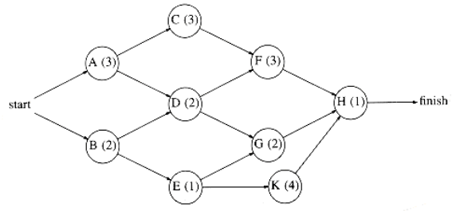
+ AOE网(activity on edges networks)
 如何表示？
如何表示？

注：必要时需要添加dummy edges和dummy nodes，避免错误或缺少的依赖关系产生
 + \(EC[j]\)：节点\(v_j\)最早的完成时间
+ \(LC[j]\)：节点\(v_j\)最晚的完成时间
+ \(EC[j]\)：节点\(v_j\)最早的完成时间
+ \(LC[j]\)：节点\(v_j\)最晚的完成时间
🌰

注：蓝字表示EC，红字表示LC，绿字表示空闲时间(后面会讲到)
-
计算EC：找到第一个事件到最后一个事件之间最长的路 >注： 图如果是有环的，因为正成本环(positive-cost cycles) 的存在，这种算法无法实现。然而这里已经规定是无环图，所以无需担心
从起点\(v_0\)开始，对于任意的\(a_i = <v, w>\)，我们有 $$ EC[0] = 0 \quad EC[w] = \max\limits_{(v,w) \in E} {EC[v] + C_{v, w}} $$
注：按拓扑序计算 + 计算LC：从终点\(v_8\)开始，对于任意的\(a_i = <v, w>\)，我们有 $$ LC[8] = EC[8] \quad LC[v] = \min\limits_{(v,w) \in E} {LC[v] - C_{v, w}} $$ 注：按逆向拓扑序计算 + \(<v, w>\)的空闲时间(slack time) = \(LC[w] - EC[v] - C_{v, w}\) + 关键活动(critical activity)：空闲时间为0的活动 + 关键路径(critical path)：所有边的空闲时间均为0的路径
All-pairs Shortest Path Problem¶
对图中任意一对顶点\(v_i, v_j(i \ne j)\)，要求它们的最短路径，有以下方法： + 使用\(|V|\)次单源算法(比如Dijkstra)，时间复杂度\(T = O(|V|^3)\)，在稀疏图中运行较快 + 用Chap 10（本学期不讲）给出的算法，时间复杂度\(T = O(|V|^3)\)，在稠密图中运行较快
Network Flow Problems¶
🌰：考虑下面的管道网络 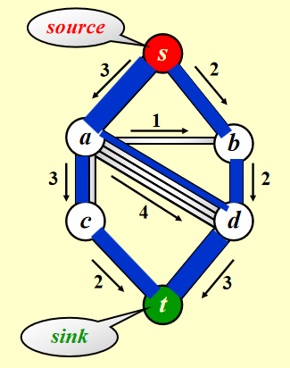 + 这是一个有向图\(G(V, E)\)，每条边的容量(capacity) 为\(c_{v, w}\)，经过该边的流量(flow) 不得超过它的容量 + 我们称起点s为源点(source)，终点t为汇点(sink) + 对于所有顶点\(v \notin \{s, t\}\)，总流入 = 总输出，即\(\text{Total coming in}(v) \equiv \text{Total going out}(v)\)，也就是说顶点 不具备存储的能力
🎯：确定从s到t的最大流(maximum-flow)
Simple Algorithm¶

注：使用这个算法时，我们需要3张图： + 原图\(G\) + 流量(flow)图\(G_f\)：表示算法运行的每个阶段中已经得到的流量，初始情况下每条边的流量均为0 + 残量(residual)图\(G_r\)：表示对于图中的每条边，还剩下多少流量可以被添加
步骤：
1. 在残量图(residual graph)\(G_r\)中找任意一条\(s \rightarrow t\)的路径(称为增广路径(augmenting path))
2. 将这条路上最小的边作为流量的一部分，并加入流量图(flow graph)\(G_f\)
3. 更新\(G_r\)，并移除流量为0的边
4. 如果\(G_r\)中还存在\(s \rightarrow t\)的路径，回到步骤1，否则终止程序

注：这种算法有一点问题——如果我们采用贪心的策略，对于上图，我们会先选择\(s \rightarrow a \rightarrow d \rightarrow t\)，这样得到的流量为3，如下图所示。然而，这样做的话我们就无法再找到第2条路径，因此总流量为3，不满足要求。因此我们需要改进上述算法。

Solution¶
改进：使算法可以撤销(undo) 决策
🔑 对于流量图\(G_f\)中的每条边(v, w)，它的流量为\(f_{v, w}\)，在残量图中添加一条反向的边(w, v)，它的流量也为\(f_{v, w}\) 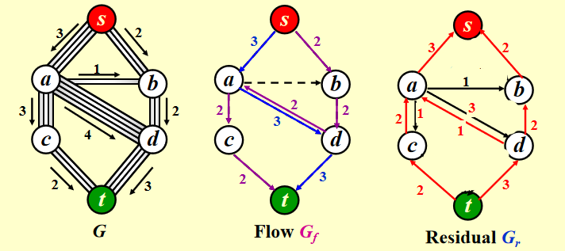
注：强烈建议看PPT，这里没有动画容易产生误解
注：如果边的容量是有理数，那么该算法在终止时总能得到一个最大流（图有环的话也可以）
Analysis¶
前提：所有边的容量为整数
我们可以利用无权最短路径算法来找到增广路径
时间复杂度\(T = O(f \cdot |E|)\)，\(f\)表示最大流量
❓：对于以下特殊情况：
 如果我们随机挑选增广路径，挑到一条包括\(a \rightarrow b\)的路径，就会产生问题：
如果我们随机挑选增广路径，挑到一条包括\(a \rightarrow b\)的路径，就会产生问题：
Random augmentations could continually augment along a path that includes the edge connected by a and b. If this were to occur repeatedly, 2,000,000 augmentations would be required, when we could get by with only 2.
解决方法： 1. 在选择增广路径时，总是挑选 对流量提升最大 的路径 如何实现：稍微改变一下Dijkstra算法
时间复杂度：
$$
\begin{align}
T = & T_{augmentation} \cdot T_{find\ a\ path} \\
= & O(|E| \log cap_{max}) \cdot O(|E|\log |V|) \\
= & O(|E|^2 \log |V|) (\text{if } cap_{max} \text{ is a small integer})
\end{align}
$$
- 在选择增广路径时，挑选 边最少 的增广路径 时间复杂度： $$ \begin{align} T = & T_{augmentation} \cdot T_{find a path} \ = & O(|E|) \cdot O(|E| \cdot |V|)\quad (\text{unweighted shortest path algorithm})\ = & O(|E|^2 |V|) \end{align} $$
Supplements¶
- 更优的算法，时间复杂度可以将至\(O(|E||V|\log(|V|^2/|E|))\)和\(O(|E||V| + |V|^{2 + \epsilon})\)
- 对于某些特殊情况，时间复杂度还可以降低：如果除了源点和汇点外的所有顶点的入边容量为1，或者出边容量为1，那么最优算法的时间复杂度为\(O(|E||V|^{\frac{1}{2}})\)
- 更复杂的问题：最小费用流问题(min-cost flow problem)——每条边不仅有容量，还要考虑单位流量的费用。🎯：要找到所有最大流量中的最小成本
Minimum Spanning Tree¶
定义：图\(G\)的生成树(spanning tree) 是一棵包含所有顶点\(V(G)\)，以及所有边\(E(G)\)的子集的树
🌰：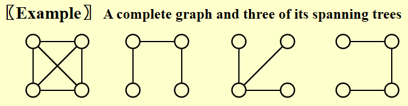 如何理解最小生成树(minimum spanning tree)？ + 最小生成树是一棵树，因为它是无环的，且边的数量为\(|V| - 1\) + 它是最小的，因为边的成本已经最小化了 + 它是生成的，因为它覆盖所有的顶点 + 最小生成树存在的充要条件是图\(G\)是连通的 + 如果在生成树中添加一条边，就会形成一个环 + 最小生成树是并不一定是唯一的，但最小生成树的==总权重是唯一的==
如何求解——贪心算法(greedy algorithm)，每一步都采取最优策略，但有以下限制： + 必须使用图里面的边 + 必须用到\(|V| - 1\)条边 + 不使用可能导致环出现的边
Prim's Algorithm¶
方法：生成一棵树，与Dijkstra算法非常相似 + 初始情况下，先将一个顶点作为树的根放入树内 + 在每个阶段，通过添加边(u, v)，满足(u, v)的成本是所有在树里的u和在树外的v之间的边中最小的，将新的顶点添加至树里
图示：

注：演示动画见PPT
与Dijkstra不同之处在于： + 要保存两类值\(d_v\)和\(p_v\)： + \(d_v\)：连接\(v\)和已知顶点的最短路的权重 + \(p_v\)：最后一个导致\(d_v\)改变的顶点 + 更新规则更加简单：对于已经选入树内的顶点\(v\)，它的邻接顶点\(w\)满足\(d_w = \min(d_w, c_{w, v})\)
注：由于这是无向图，因此需要用到两张邻接表存储图
时间复杂度： + 不用堆(适用于稠密图)：\(O(|V|^2)\) + 二叉堆(适用于稀疏图)：\(O(E\log|V|)\)
Kruskal's Algorithm¶
方法：维持一片森林(一组树)
+ 初始情况下，有\(|V|\)棵单个节点构成的树
+ 添加一条边，可以合并两棵树。当算法结束时，应当只剩下一棵树。因此，我们很自然地想到使用并查集的算法
+ 挑选边(这里假设挑选边\((u, v)\))时要注意的细节：
+ 如果u, v在同一个集合内，则不能添加这条边（否则会出现环）
+ 否则加入这条边，使用Union算法将两个集合合并起来
+ 用堆维护未被检验过的最小的边，每当检验一条边时，使用DeleteMin算法
图示：

伪代码实现：
void Kruskal(Graph G)
{
T = { };
while (T contains less than [V] - 1 edges && E is not empty)
{
choose a least cost edge(v, w) from E; // DeleteMin
delete(v, w) from E;
if ((v, w) does not create a cycle in T)
add(v, w) to T; // Union/Find
else
discard(v, w);
}
if (T contains fewer than [V] - 1 edges)
Error("No spanning tree");
}
正式代码：
void Kruskal(Graph G)
{
int EdgesAccepted;
DisjSet S;
PriorityQueue H;
Vertex U, V;
SetType Uset, Vset;
Edge E;
Initialize(S);
ReadGraphIntoHeapArray(G, H);
BuildHeap(H);
EdgeAccepted = 0;
while (EdgesAccepted < NumVertex - 1)
{
E = DeleteMin(H); // E = (U, V)
Uset = Find(U, S);
Vset = Find(V, S);
if (Uset != Vset)
{
// Accept the edge
EdgesAccepted++;
SetUnion(S, Uset, Vset);
}
}
}
由于每条边要存3个字段，因此用指针数组存储边可能更加高效。
时间复杂度：\(T = O(|E|\log |E|) = O(|E| \log |V|) \quad (|E| = O(|V|^2))\)
Applications of Depth-First Search¶
深度优先搜索(depth-first search, DFS) 是一种前序遍历的泛化。 + 树：时间复杂度\(T = O(|E|)\ (|E| = \Theta(|V|))\) + 图：注意要避免环(cycles)，所以访问过的顶点就要对其标记，然后接着访问未访问过的顶点。 + 如果无向图不连通，或者有向图不是强连通的，那么用一次DFS无法访问所有顶点，需要对未标记的顶点再用一次DFS，直至所有顶点都被标记。因此，时间复杂度为\(O(|E| + |V|)\)
模版：
void DFS(Vertex V)
{
visited[V] = true; // mark this vertex to void cycles
for (each W adjacent to V)
if (!visited[W])
DFS(W);
}
Undirected Graphs¶
当且仅当1次DFS能够遍历所有顶点时，无向图是连通的
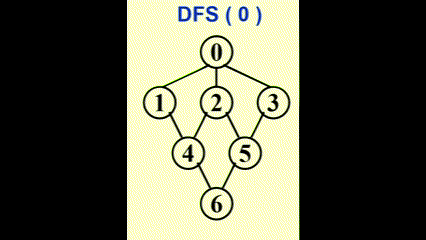
我们可以使用深度优先生成树(depth-first spanning tree) 来形象展示DFS的过程。当我们发现某条边(v, w)中的w已被标记过，用虚线画出这条边，称作“回边(back edge)”，表示这条边不包含于生成树里，如图所示：

注：如果无向图不连通，则可以生成深度优先生成森林(depth-first spanning forest)
代码实现：
Biconnectivity¶
- 当
G' = DeleteVertex(G, v)至少有2个连通分量，称v为关节点(articulation point)人话：图不是双连通的，且某个顶点的移除会破坏图的连通性，称该顶点为关节点
- 如果
G是连通的且没有关节点，称G为双连通图(biconnected graph)人话：任意顶点的移除不会破坏剩余的无向图的连通性
- 双连通分量(biconnected component)：最大的双连通子图

注：没有一条边会同时出现在多个双连通分量中。因此E(G)被双连通分量划分
问题：寻找无向连通图G中的所有双连通分量
预备：
+ Num(v)：顶点v的前序遍历的序号
+ Low(v)：所有通过树的边和回边与v相连通的最小顶点(\(\min(Num(w_i))\))。这里要用到后序遍历，找到所有与v相邻的顶点，然后找出最小的那个
解决方法：
+ 使用深度优先搜索(depth first search) 得到G的生成树

注：回边(back edges) (u, v)：(u, v) \(\notin\) tree，且u(或v)是v(或u)的祖先。如果u是v的祖先，则Num(u) < Num(v)
- 找到G内的关节点
- 当且仅当根节点至少有2个孩子时，根节点为关节点
- 当且仅当其他的顶点u至少有1个孩子，且不能通过往下移动至少1步来到它的祖先(即Low(child) \(\ge\) Num(u))时，u为关节点
列表：
代码：
// Assign Num and compute Parents
void AssignNum(Vertex V)
{
Vertex W;
Num[V] = Counter++;
Visited[V] = ture;
for each W adjacent to V
if (!Visited[W])
{
Parent[W] = V;
AssignNum(W);
}
}
// Assign Low; also check for articulation points
void AssignLow(Vertex V)
{
Vertex W;
Low[V] = Num[V]; // Rule 1
for each W adjacent to V
{
if (Num[W] > Num[V])
{
AssignLow(W);
if (Low[W] >= Num[V])
printf("%v is an articulation point\n", v);
Low[V] = Min(Low[V], Low[W]); // Rule 3
}
else if (Parent[V] != W)
Low[V] = Min(Low[V], Num[W]); // Rule 2
}
}
// Testing for articulation points in one depth-first search
void FindArt(Vertex V)
{
Vertex W;
Visited[V] = True
Low[V] = Num[V] = Counter; // Rule 1
for each W adjacent to V
{
if (!Visited[W])
{
Parent[W] = V;
FindArt(W);
if (Low[W] >= Num[V])
printf("%v is an articulation point\n", v);
Low[V] = Min(Low[V], Low[W]); // Rule 3
}
else if (Parent[V] != W)
Low[V] = Min(Low[V], Num[W]); // Rule 2
}
}
Euler Circuits¶
- 欧拉路程(Euler tour)：在笔不离纸的情况下，每条边仅画到一遍（一笔画）
-
欧拉回路(Euler circuit)：在笔不离纸的情况下，每条边仅画到一遍，且最后回到起点的位置 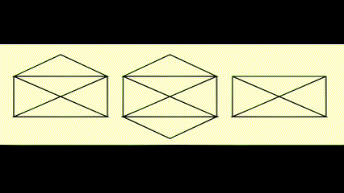
-
当且仅当图是连通的，且每个顶点都有==偶数个度==时，欧拉回路是有可能出现的
- 当且仅当两个顶点有奇数个度时，且从奇数度的顶点出发画图，则欧拉路程是有可能的
利用DFS寻找欧拉回路：
[!note] + 用链表维护路径 + 对于每个邻接表，维护一个指向最后被扫描的边 + 时间复杂度\(T = O(|E| + |V|)\)
注：哈密顿环(Hamilton cycle)：在无向图中找到一个最小的，访问所有顶点的圈，代码见下面的[[Chap 9 Graph Algorithm#^3b293b|题目]]（wiki）
Directed Graphs¶
Finding Strong Components¶
Problems¶
2-1. If graph G is NOT connected and has 35 edges, then it must have at least ___ vertices. A. 7 B. 8 C. 9 D. 10
D
\(C(8, 2) = 28, C(9, 2) = 36\)，因此9个顶点35条边也能构成连通图，所以需要10个顶点
2-2. A graph with 90 vertices and 20 edges must have at least __ connected component(s). A. 69 B. 70 C. 84 D. 85
B
20条边至多可以将21个顶点连接起来，形成一个连通分量。那么剩余69个顶点各自形成连通分量，所以最小的总的连通分量个数为1 + 69 = 70
2-4. Given an undirected graph G with 16 edges, where 3 vertices are of degree 4, 4 vertices are of degree 3, and all the other vertices are of degrees less than 3. Then G must have at least __ vertices. A. 10 B. 11 C. 13 D. 15
B
对于无向图，16条边就有32个度，已知3 * 4 + 4 * 3 = 24个度，因此剩下12个度。又因为其余顶点的度少于3个，因此就让它们的度均为2，因此就有 8 / 2 = 4个顶点。所以至少有3 + 4 + 4 = 11个顶点
Midterm-R2-9. A graph with 100 vertices and 12 edges must have at most ___ connected component(s). A.95 B.88 C.94 D.87
A
12条边至少使6个顶点连通，因为\(\dfrac{5(5-1)}{2} < 12 \le \dfrac{6(6-1)}{2}\)。所以至多有94 + 1 = 95个连通分量
注：将2-2和Midterm-R2-9对照起来看，注意题目问的是什么
The minimum spanning tree of any weighted graph A. must be unique B. must not be unique C. exists but may not be unique D. may not exist
D
最小生成树存在的充要条件是图是 连通的
6-1 Is Topological Order¶
Write a program to test if a give sequence Seq is a topological order of a given graph Graph.
Format of functions:
where LGraph is defined as the following:
typedef struct AdjVNode *PtrToAdjVNode;
struct AdjVNode{
Vertex AdjV;
PtrToAdjVNode Next;
};
typedef struct Vnode{
PtrToAdjVNode FirstEdge;
} AdjList[MaxVertexNum];
typedef struct GNode *PtrToGNode;
struct GNode{
int Nv;
int Ne;
AdjList G;
};
typedef PtrToGNode LGraph;
The function IsTopSeq must return true if Seq does correspond to a topological order; otherwise return false.
Note: Although the vertices are numbered from 1 to MaxVertexNum, they are indexed from 0 in the LGraph structure.
Sample program of judge:
#include <stdio.h>
#include <stdlib.h>
typedef enum {false, true} bool;
#define MaxVertexNum 10 /* maximum number of vertices */
typedef int Vertex; /* vertices are numbered from 1 to MaxVertexNum */
typedef struct AdjVNode *PtrToAdjVNode;
struct AdjVNode{
Vertex AdjV;
PtrToAdjVNode Next;
};
typedef struct Vnode{
PtrToAdjVNode FirstEdge;
} AdjList[MaxVertexNum];
typedef struct GNode *PtrToGNode;
struct GNode{
int Nv;
int Ne;
AdjList G;
};
typedef PtrToGNode LGraph;
LGraph ReadG(); /* details omitted */
bool IsTopSeq( LGraph Graph, Vertex Seq[] );
int main()
{
int i, j, N;
Vertex Seq[MaxVertexNum];
LGraph G = ReadG();
scanf("%d", &N);
for (i=0; i<N; i++) {
for (j=0; j<G->Nv; j++)
scanf("%d", &Seq[j]);
if ( IsTopSeq(G, Seq)==true ) printf("yes\n");
else printf("no\n");
}
return 0;
}
/* Your function will be put here */
Sample Input (for the graph shown in the figure):

Sample Output:
My code:
bool IsTopSeq( LGraph Graph, Vertex Seq[] )
{
int indegree[MaxVertexNum];
int i;
int flag = 1;
PtrToAdjVNode cur;
for (i = 0; i < Graph->Nv; i++)
{
indegree[i] = 0;
}
for (i = 0; i < Graph->Nv; i++)
{
cur = Graph->G[i].FirstEdge;
while (cur != NULL)
{
indegree[cur->AdjV]++;
cur = cur->Next;
}
}
for (i = 0; i < Graph->Nv; i++)
{
if (indegree[Seq[i] - 1] != 0)
{
flag = 0;
break;
}
indegree[Seq[i] - 1] = -1;
cur = Graph->G[Seq[i] - 1].FirstEdge;
while (cur != NULL)
{
indegree[cur->AdjV]--;
cur = cur->Next;
}
}
if (flag)
return true;
else
return false;
}
7-1 Hamiltonian Cycle¶
^3b293b
The "Hamilton cycle problem" is to find a simple cycle that contains every vertex in a graph. Such a cycle is called a "Hamiltonian cycle".
In this problem, you are supposed to tell if a given cycle is a Hamiltonian cycle.
Input Specification:
Each input file contains one test case. For each case, the first line contains 2 positive integers N (2<N≤200), the number of vertices, and M, the number of edges in an undirected graph. Then M lines follow, each describes an edge in the format Vertex1 Vertex2, where the vertices are numbered from 1 to N. The next line gives a positive integer K which is the number of queries, followed by K lines of queries, each in the format:
n V1 V2 ... Vn
where n is the number of vertices in the list, and Vi's are the vertices on a path.
Output Specification:
For each query, print in a line YES if the path does form a Hamiltonian cycle, or NO if not.
Sample Input:
6 10
6 2
3 4
1 5
2 5
3 1
4 1
1 6
6 3
1 2
4 5
6
7 5 1 4 3 6 2 5
6 5 1 4 3 6 2
9 6 2 1 6 3 4 5 2 6
4 1 2 5 1
7 6 1 3 4 5 2 6
7 6 1 2 5 4 3 1
Sample Output:
My code:
#include <stdio.h>
#include <stdlib.h>
#define SIZE 201
#define PSIZE 2001
typedef struct AdjVNode *PtrToAdjVNode;
struct AdjVNode{
int AdjV;
PtrToAdjVNode Next;
};
typedef struct Vnode{
PtrToAdjVNode FirstEdge;
} AdjList[SIZE];
typedef struct GNode *PtrToGNode;
struct GNode{
int Nv;
int Ne;
AdjList G;
};
typedef PtrToGNode LGraph;
void HCycle(LGraph g, int p[ ]);
int main()
{
int n, m, k, q;
int i, j;
int v1, v2;
int path[PSIZE];
LGraph Graph;
PtrToAdjVNode cur1, cur2;
Graph = (PtrToGNode)malloc(sizeof(struct GNode));
scanf("%d%d", &n, &m);
Graph->Nv = n;
Graph->Ne = m;
for (i = 0; i < n; i++)
{
Graph->G[i].FirstEdge = NULL;
}
for (i = 0; i < m; i++)
{
scanf("%d%d", &v1, &v2);
cur1 = (PtrToAdjVNode)malloc(sizeof(struct AdjVNode));
cur1->AdjV = v2;
cur1->Next = Graph->G[v1 - 1].FirstEdge;
Graph->G[v1 - 1].FirstEdge = cur1;
cur2 = (PtrToAdjVNode)malloc(sizeof(struct AdjVNode));
cur2->AdjV = v1;
cur2->Next = Graph->G[v2 - 1].FirstEdge;
Graph->G[v2 - 1].FirstEdge = cur2;
}
scanf("%d", &k);
for (i = 0; i < k; i++)
{
scanf("%d", &q);
for (j = 0; j < q; j++)
scanf("%d", &path[j]);
if (q != Graph->Nv + 1)
printf("NO\n");
else
HCycle(Graph, path);
}
return 0;
}
void HCycle(LGraph g, int p[ ])
{
int i;
int flag[SIZE];
PtrToAdjVNode cur;
if (p[0] != p[g->Nv])
{
printf("NO\n");
}
else
{
for (i = 0; i < g->Nv; i++)
flag[i] = 0;
for (i = 1; i < g->Nv + 1; i++)
{
if (flag[p[i - 1] - 1] == 1)
{
printf("NO\n");
return;
}
cur = g->G[p[i - 1] - 1].FirstEdge;
while (cur != NULL && cur->AdjV != p[i])
cur = cur->Next;
if (cur == NULL)
{
printf("NO\n");
return;
}
flag[p[i - 1] - 1] = 1;
}
printf("YES\n");
}
}
创建日期: 2024年6月1日 17:09:32
评论区